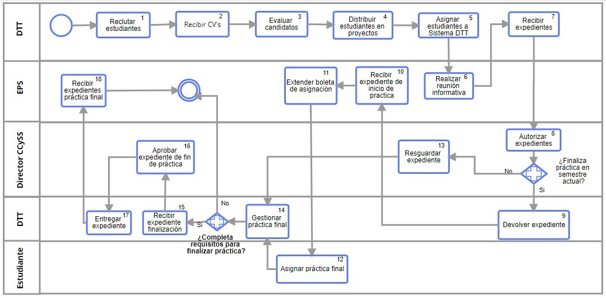

Artículo 11 Pasos para tus prácticas finales
Este artículo va dirigido a todos los estudiantes que aún no han llegado a la fase de prácticas finales, si estas iniciando la carrera te contamos que deberás hacer prácticas iniciales, intermedias y finales, las tres prácticas forman parte del pensum de estudios, pero, para todos aquellos que van a realizar prácticas finales pronto dejaremos información acerca de los pasos que deberán dar para iniciar su práctica y durante la misma.
Básicamente la administración y gestión de prácticas finales están a cargo del proyecto DTT de la Escuela de Ingeniería en Ciencias y Sistemas (ECYS).
Pasos a seguir para realizar tus prácticas finales:
- Se abrirán convocatorias, se anuncia en plataforma DTT para estudiantes interesados.
- Los aspirantes deben enviar su hoja de vida en digital a través de la plataforma electrónica al coordinador del DTT.
- DTT evaluará a los candidatos, por ejemplo a los tutores de cátedra los convoca a un examen de oposición para definir el curso o los cursos donde participará como tutor (antes se le llamaba auxiliar).
- Definición de candidatos según proyecto: En este paso el DTT valora y define los resultados de la evaluación de candidatos y se distribuyen de la mejor y conveniente manera a los estudiantes en las diferentes áreas.
- Los practicantes deben ser asignados en la plataforma informática del DTT.
La unidad de EPS realiza una reunión informativa para dar a conocer los documentos que deben reunir y en las fechas que deben entregar:
Carta de ECYS dando a conocer la asignación de práctica en área correspondiente dirigida a la unidad de EPS.
Formulario de inicio de práctica.
Carta Aceptación de Jefe en la unidad donde realizará la práctica.
Carta de Entendimiento firmada por el practicante y por el ente rector del lugar donde realizará la práctica.
Certificación de cursos aprobados en original con al menos 200 créditos.
- El DTT debe recibir los expedientes según los lineamientos fijados en la reunión informativa.
- El director de la ECYS autoriza cada expediente de práctica final.
- Si el estudiante concluye la práctica final en el semestre actual, se le devuelve el expediente inicial para que tramite su inscripción en EPS (paso 1 0) de lo contrario se resguarda el expediente.
- La unidad de EPS recibe el expediente de inicio de práctica.
- EPS extiende boleta de asignación.
- Asignar Práctica Final, el estudiante se asigna práctica final en el sistema de Ingeniería (Centro de Cálculo).
- Los expedientes de estudiantes que inician su práctica final son resguardados por la Escuela de Sistemas.
- DTT gestiona y da seguimiento a la práctica final de cada estudiante, con solicitud de informes parciales y periódicos a cada estudiante durante los dos semestres del tutor.
Si la práctica termina el semestre en curso el expediente es entregado a DTT.
Carta de Finalización avalada por director de ECYS.
Formulario de finalización.
Carta de finalización, jefe afirmando el buen desempeño del practicante en el proyecto correspondiente.
Boleta de seguimiento (control de fechas de informes entregados).
Solvencia DTT (constancia de informes y control de desempeño de practicante).
CD conteniendo todos los informes entregados en el Sistema DTT en formato PDF.
Si el estudiante no completa los requisitos para finalizar se da por reprobado el año de práctica final.
- Aprobar expediente de fin de práctica, el director de ECyS revisa y aprueba cada expediente de práctica final.
- Entregar expediente, se entrega el expediente de finalización de práctica final a cada estudiante.
- Recibir expedientes de práctica final, el expediente incluye notas de los jefes inmediatos para ser completados los datos en el sistema de notas de la Facultad de Ingeniería y el estudiante pueda completar el trámite de prácticas finales.
Flujo de procesos para prácticas finales
